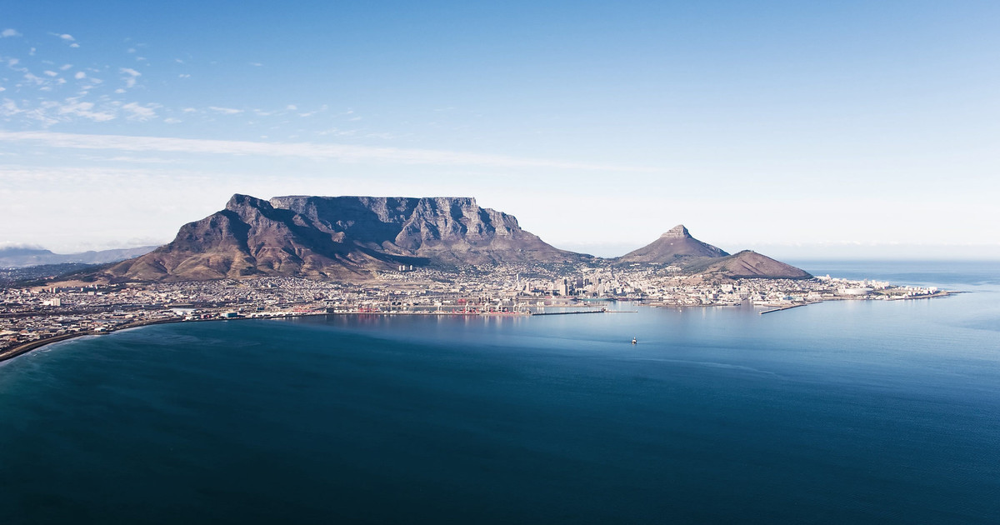
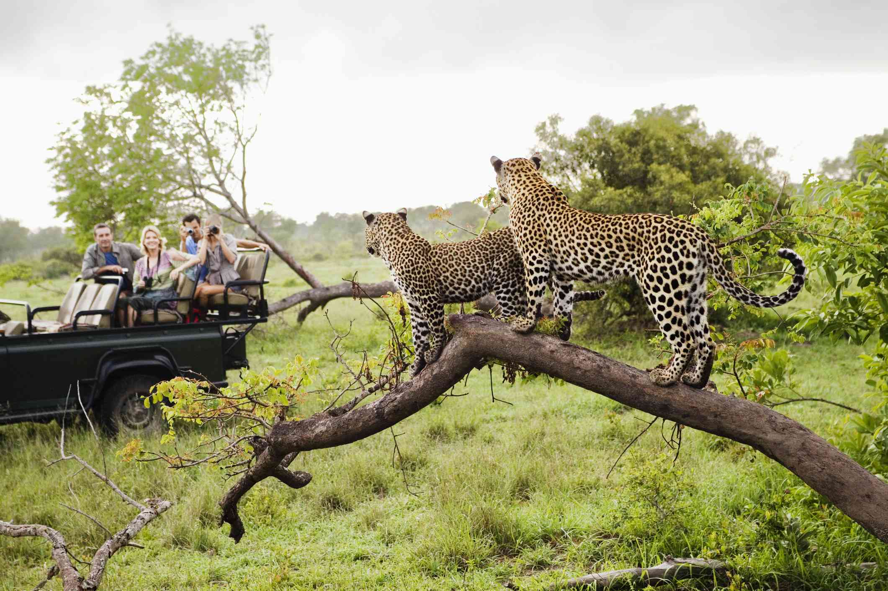
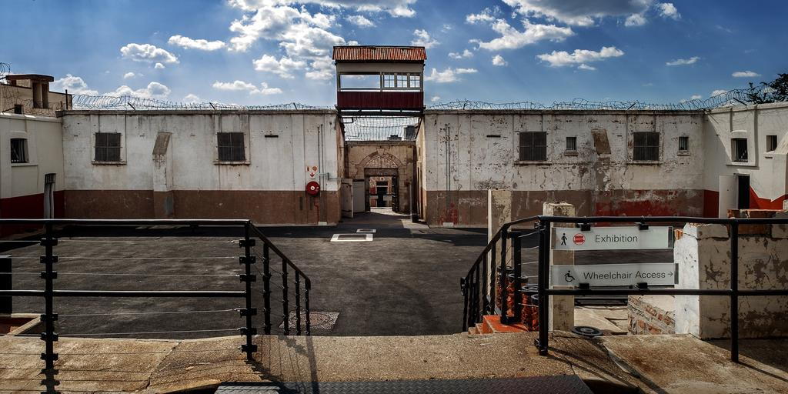

Explore South Africa
It’s breathtaking, it’s captivating, it’s bustling, it’s endless… it’s South Africa! In every province, around every corner, there’s a magic moment waiting to leave you inspired with incredible people underpinning it all. From city life to adventure, wildlife to culture, breathtaking scenery to sun-soaked coasts – discover South Africa.
Table Mountain
Whether it is covered in a blanket of moody clouds or showing off against a crisp cloudless blue sky, Table Mountain is always spectacular. Cape Town locals are pretty fond of the mountain that looms over their city… and with good reason! Table Mountain, which is home to the richest, yet smallest floral kingdom on earth, was voted one of the New Seven Wonders of the World in 2011. Flanked by Devil’s Peak and Lion’s Head, Table Mountain makes up the northern end of the Cape Fold Mountain range. It’s hard to imagine, but the mountain’s distinctive flat top – a three-kilometre level plateau – was once the bottom of a valley! The mountain was given its name — Taboa do Cabo (Table of the Cape) — by Antonio de Saldahna after he climbed up Platteklip Gorge in 1503. Legend has it that the tablecloth of clouds that pours over the mountain when the southeaster blows is the result of a smoking contest between the devil and a retired sea captain called Jan van Hunks.
Kruger National Park
Kruger National Park, in northeastern South Africa, is one of Africa’s largest game reserves. Its high density of wild animals includes the Big 5: lions, leopards, rhinos, elephants and buffalos. Hundreds of other mammals make their home here, as do diverse bird species such as vultures, eagles and storks. Mountains, bush plains and tropical forests are all part of the landscape.
Constitution Hill
The Constitution Hill precinct is located at 11 Kotze Street in Braamfontein, Johannesburg near the western end of the suburb of Hillbrow. Constitution Hill is the seat of the Constitutional Court of South Africa
